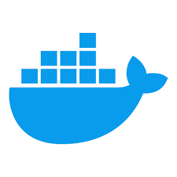

Core Languages & Workflow Engines
Primary StackNextflow DSL2
OrchestrationEnd-to-end design of reproducible, scalable bioinformatics pipelines. NF-Core modular architectures, checkpointing, GCP Batch, and AWS Batch deployment.
Python
Data ScienceAdvanced genomic data manipulation (BioPython, Pandas, NumPy, SciPy), machine learning models for phage-host prediction, and automated REST API backend microservices.
R & Bioconductor
BioinformaticsDifferential expression (DESeq2, edgeR), microbial community ecology (Phyloseq, Vegan), statistical hypothesis testing, and publication-ready data visualizations (ggplot2).
Bash & Linux HPC
SystemsLinux system administration, cloud compute management (GCP, AWS), POSIX shell automation, AWK/sed parsing, and multi-core resource allocation.
Generative AI, Autonomous Agents & Scientific RAG
Emerging ArchitecturesAutonomous Agents & Multi-Agent Systems
Agentic OrchestrationEngineering autonomous, multi-step agent systems to streamline scientific computing and laboratory workflows. Implementing tool-calling LLMs, stateful multi-agent collaboration (LangGraph, CrewAI), and automated decision loops that generate Nextflow execution configs, validate QC metrics, and synthesize complex biological outputs.
Domain Knowledge RAG & Semantic Search
Vector Knowledge BasesArchitecting Retrieval-Augmented Generation (RAG) frameworks for scientific literature and multi-omic data. Deploying dense embeddings, hybrid vector search (PostgreSQL + pgvector, ChromaDB, Qdrant), and contextual reranking to query PubMed/PMC corpuses, variant catalogs, and internal clinical assay documentation with zero hallucination.
Cloud & Containers
DevOpsCloud execution environments and containerized microservices:

Docker Git / GitHub
Git / GitHub
Databases & SQL
DataRelational schemas and high-dimensional genomic datastores:
 MySQL
MySQL
 SQL Modeling
SQL Modeling
Reporting & Web
DashboardsAutomated reporting pipelines, reproducible documents, and interactive web dashboards:
 R / Shiny
R / Shiny
 Bootstrap 5
Bootstrap 5
Leadership & Strategic Competencies
Executive StrengthsTeam Leadership & Scaling
Directing multidisciplinary teams of bioinformaticians, software engineers, and molecular biologists to consistently meet aggressive development milestones.
Executive Communication
Translating complex genomic findings, risk matrices, and algorithmic discoveries into clear, actionable recommendations for C-suite leaders and clinical partners.
IP Strategy & Patenting
Identifying novel algorithmic and biological inventions, writing technical claims, and securing patent protection across international jurisdictions (WIPO/USPTO).
Experimental Rigor
Designing robust benchmarking frameworks, negative/positive controls, and statistical bounds for high-throughput sequencing assays.
Mentorship & Development
Fostering technical growth, modern software practices, reproducible pipeline methodologies, and scientific writing in team members.
Adaptability & Problem Solving
Agile response to evolving biological questions, new sequencing chemistries, and shifting industry priorities without sacrificing quality.